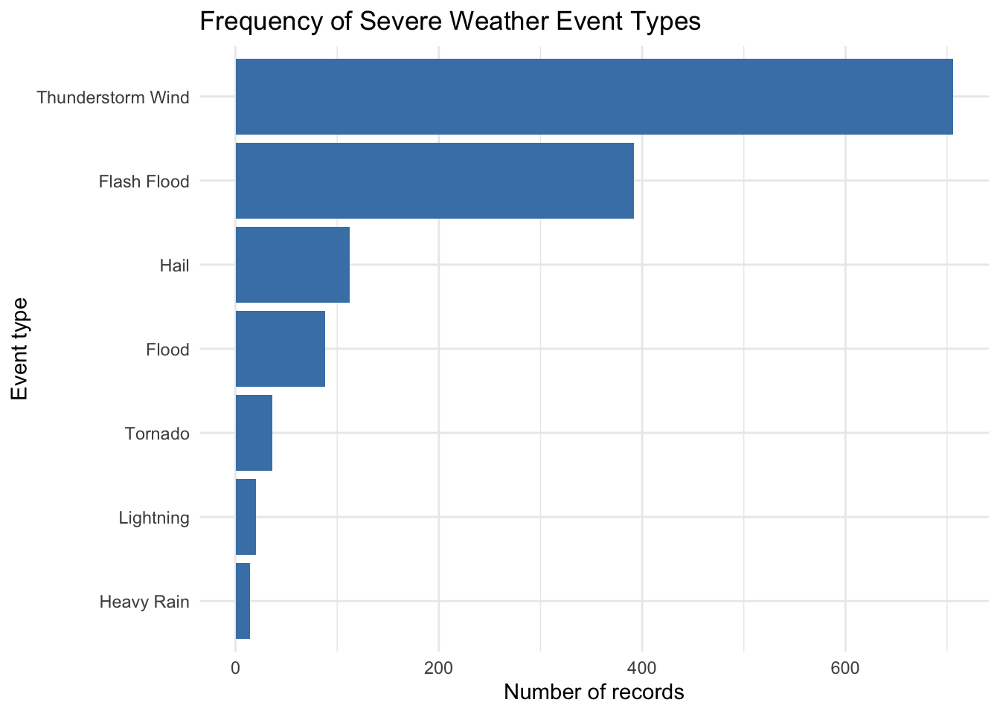
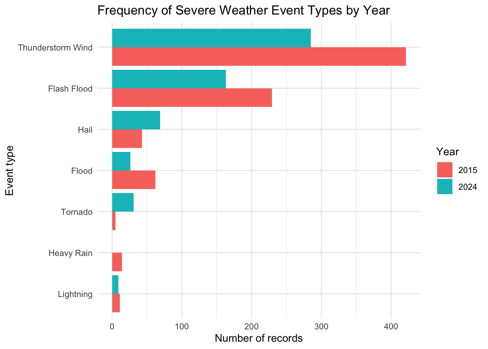
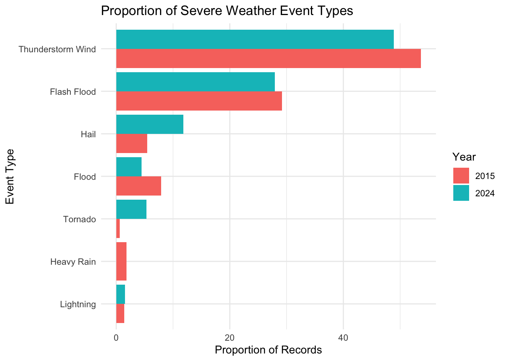
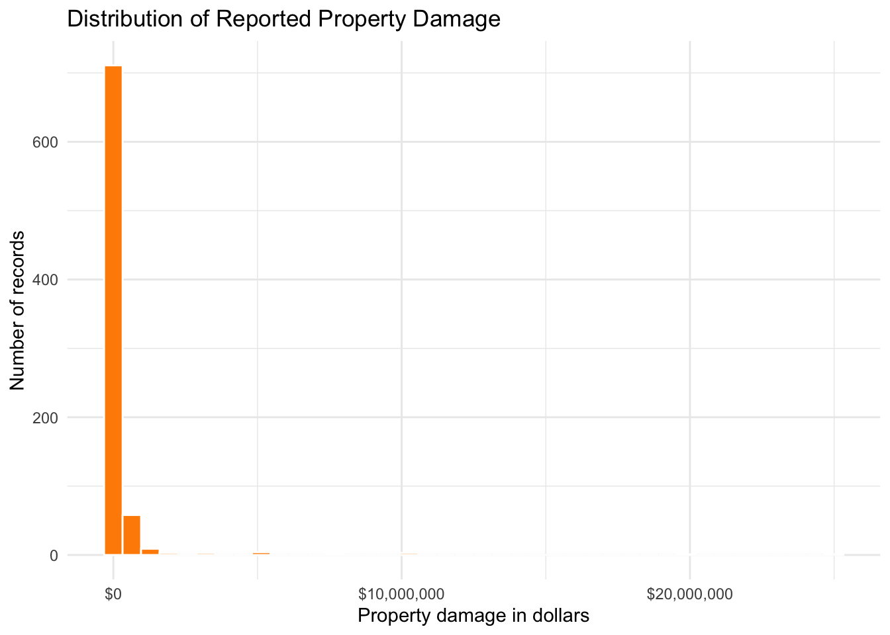
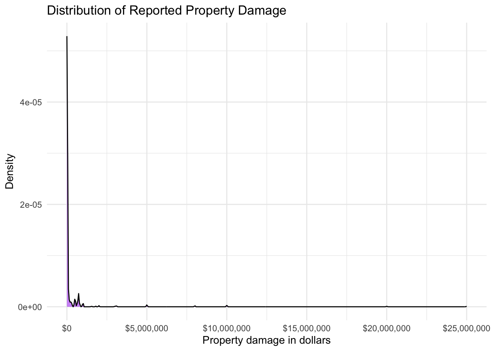
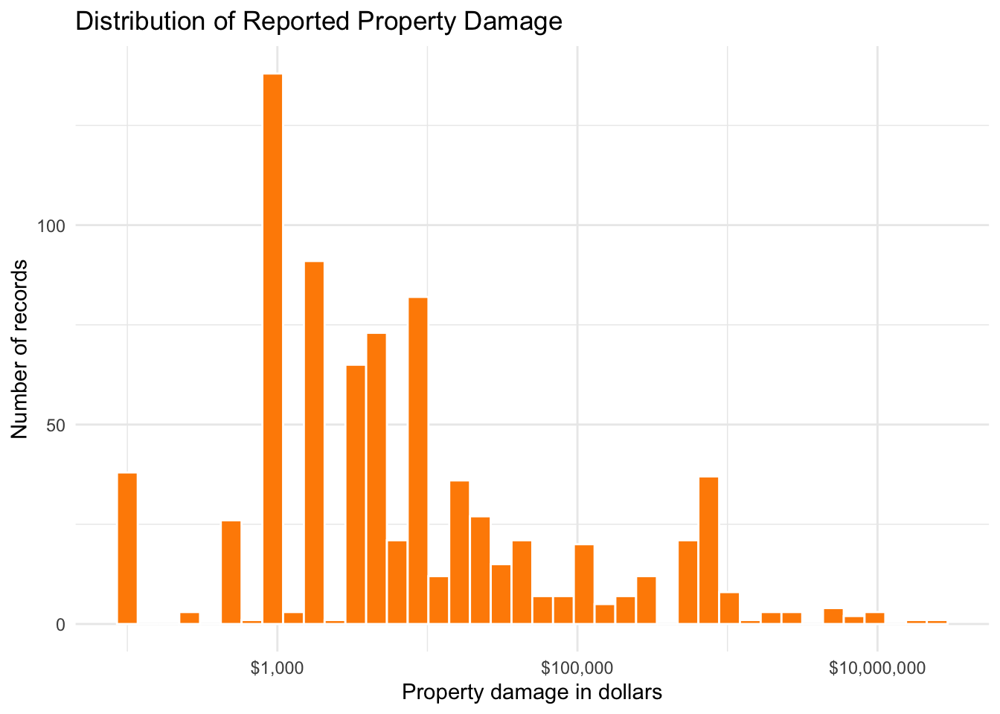
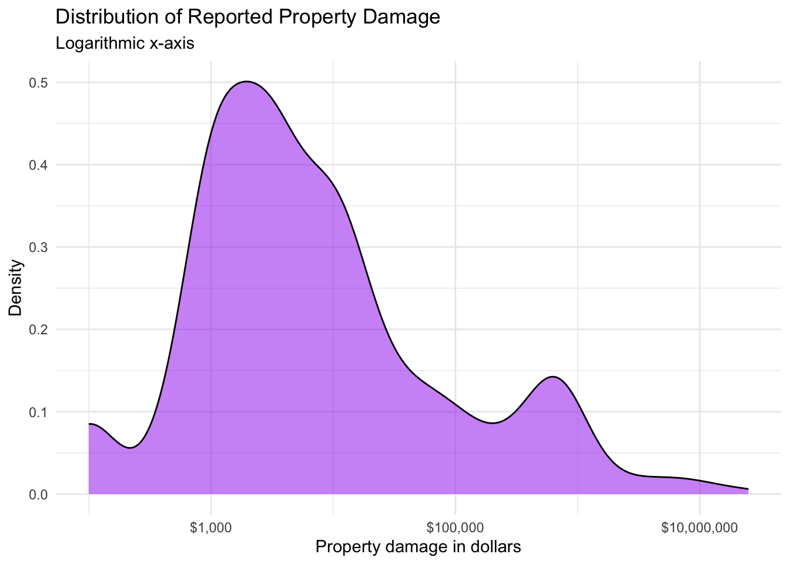
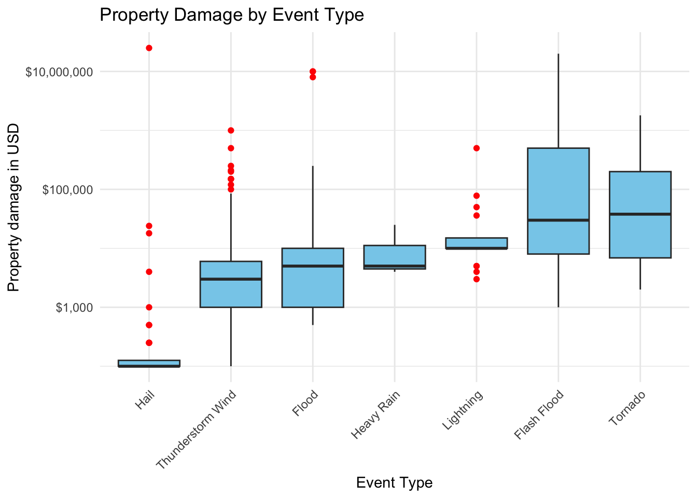
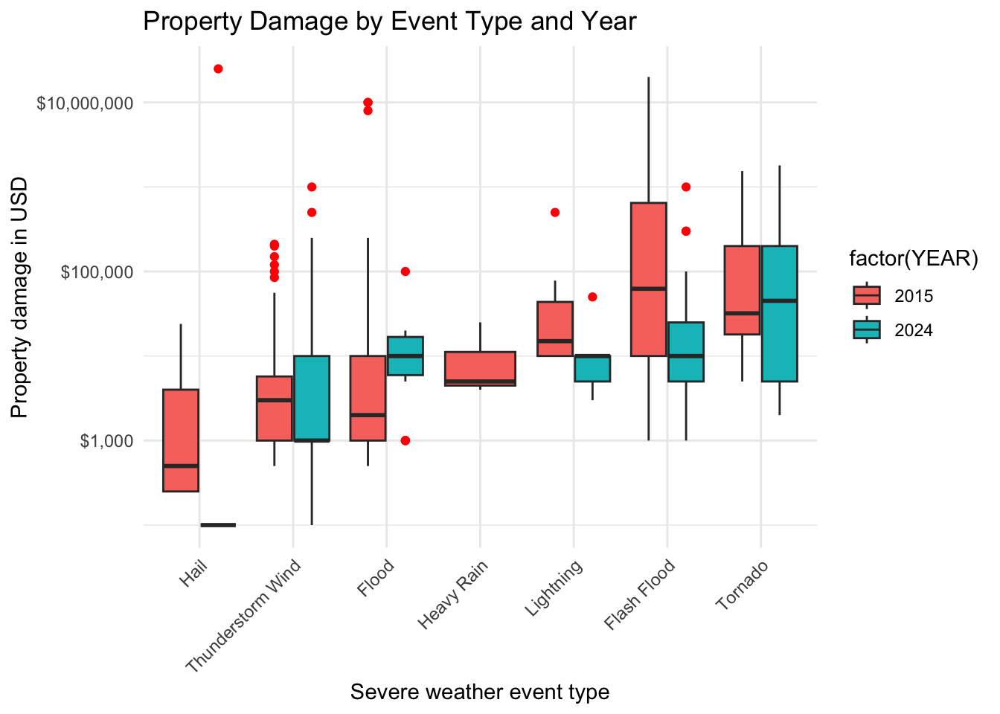

#load packages
library(tidyverse)
#library(sf) # for spatial data
#library(plotly) # For interactive plotting
#library(tidycensus) # for reading US census data in R
#library(tigris)# For downloading and reading US geographic administrative boundaries in R
#options(tigris_use_cache = TRUE)
### DONT TOUCH THIS NEXT LINE OF CODE ###
#census_api_key(key = "a0b70fd4d6380a164f8b90cef1e114f9a7ed6706", install = TRUE, overwrite = TRUE)
# load SC severe weather events 2015 and 2024
dat15 <- read_csv("data/sc_nhaz_15.csv")
dat24 <- read_csv("data/sc_nhaz_24.csv")Homework 1A: Once Upon a Stormy Evening (Answer Key)
Due Date: September 25, Friday, 11:59 pm (150 points + 20 bonus points)
Introduction
The purpose of this HW is for you to utilize your descriptive statistics and visualization skills to a real world dataset and problem. Here, you will describe how the spatial distribution and frequency of different severe weather events in South Carolina has changed over time using the tools that you have learned in class. Part A of the assignment (75 points) involves data visualization and descriptive analysis while Part B will extend the analysis to descriptive spatial statistics.
Instructions (Read first)
Go to
File –> Save as, and save this ashw1_answers.qmd. Then you can use that file for filling in all your answers.However, you will notice that since lots of code sections have incomplete code, In the header of the
.qmdfile, we have a setting that reads aseval: false. This prevents the code from running. Hence, whenever you complete a code section, you could override that command by adding#| eval: trueto each code chunk. This is done for the first two code chunks.Please make sure that your code is entered in your code block but your written answers are OUTSIDE your codeblock. Only put comments (using #) in your code to describe your code. Your answers (other than code) need to be written outside your code block.
Generative AI Use:
You are welcome to use ChatGPT or other generative AI for your assignment. I encourage to use it mainly for coding help as needed. However, I also encourage you to first try to code yourself based on what we have learned so that you can get some practice. Even if you can “pseudocode” (being able to tell R instructions in a human-readable way), you have done well. If you do use generative AI for any part of the assignment, create a word doc titled
ai_prompts.docx. For each prompt that you provide to generative AI software, report the following in the document:The Question number from your homework
Your exact prompt as inputted to the AI
The RAW (unchanged) answer generated by the software
Note that even if you use AI, you are responsible for cross-checking your content and ensure you understand your outputs, and importantly, are able to explain it verbally if called upon.
If you do use AI, but do not disclose ALL your prompts , I will consider it as plagiarism and take strict action including giving you a zero on your assignment and report it as an academic integrity incident. There is a specific manner in which softwares like ChatGPT write code. If I detect those patterns or suspect you used AI but did not report it, I may ask you to solve the problem in front of me to ensure that you did the problem and not generative AI. Hence, to be safe, please report all your prompts even if you made little or extensive use of generative AI
Working Together with other classmates
- You are welcome to work with a classmate or discuss answers and code, but your homework should be your own work. If you do work with a classmate, please report in the document whom you worked with so that I give you the benefit of doubt in case there are similar answers with an another person’s work. I encourage you to work together and problem solve together!!
Getting help
DONT WAIT till the Last Minute. Ask me for help, proactively. I am here for you.
Your readings/In-class labs are a great resource, and if you havent gotten a chance to go through them, this is your chance to do so!
1 Load packages and data
Wheneve you start an analysis, it is good practice to first install and load all your packages, and also import data that you may be using. We have already installed this packages in R Posit, but we will load them, and also import severe weather events data. Luckily for us, the National Center for Environmental Information at NOAA maintains a comprehensive database of severe weather events. You can read more about it here: https://www.ncei.noaa.gov/stormevents/
Run the following code below.
This is a cleaned up and truncated version of the actual dataset which is very messy. However, even though this data is ‘clean’, there can be several hidden issues. It is important to know what each variable represents and how it is coded. To know what these variables are, refer to the codebook (Page 1-6) in the docs folder.
2 Examining your Data
2.1 Cleaning Data
Before we can answer our descriptive questions, we need to first examine the data to make sure it is ready for analysis.
Q.1 Examine the following variables more closely. Explain what kind of variable (nominal, ordinal, interval, ratio) they should be, and how they are actually stored as in the 2024 dataset.[5 points]
EVENT_TYPE - Categorical nominal
DEATHS_DIRECT - ratio variable, stored as double/integer (ratio/integer)
DAMAGE_PROPERTY - stored as a categorial nominal variable. It should be stored as a ratio (integer or double), numbers should not be stored as text because you cannot run analysis on them as is.
Now we will make some changes to our dataframes to get them analysis ready. For example, The original `DAMAGE_PROPERTY` variable stores values using suffixes such as `K` for thousands and `M` for millions. We need to convert these to actual digits for R to work with them for analysis. The following function has been created for you to convert those values to dollars. Run the code below to create the function named convert_damage
# Convert property damage values such as 35.00K, 1.80M, and 2.00B to dollars
convert_damage <- function(x) {
x <- toupper(trimws(as.character(x)))
result <- suppressWarnings(
readr::parse_number(
x,
na = c("", "NA", "N/A")
)
)
result <- dplyr::case_when(
is.na(x) ~ NA_real_,
x == "" ~ NA_real_,
grepl("B$", x) ~ result * 1e9,
grepl("M$", x) ~ result * 1e6,
grepl("K$", x) ~ result * 1e3,
TRUE ~ result
)
result
}
print("hello")[1] "hello"Now we will apply this function to our datasets along with some other changes.
Q.2 Complete the missing code below to get your 2015 and 2024 datasets analysis ready: [5 points]
# We will first create new variables or fix old variables
# create a new column that stores property damage values in USD
# also create a column that combines injuries, and deaths
# convert event types to factor class (nominal variable)
# Here is the code For the 2015 dataset:
dat15 <- dat15 |>
mutate(
PROP_DAMAGE_USD = convert_damage(DAMAGE_PROPERTY), # appying the function
ALL_INJ = INJURIES_DIRECT + INJURIES_INDIRECT,
ALL_DEATH = DEATHS_DIRECT + DEATHS_INDIRECT,
EVENT_TYPE_F = as.factor(EVENT_TYPE)
)
# Now do the same for 2024 data
dat24 <- dat24 |>
mutate(
PROP_DAMAGE_USD = convert_damage(DAMAGE_PROPERTY),
ALL_INJ = INJURIES_DIRECT + INJURIES_INDIRECT,
ALL_DEATH = DEATHS_DIRECT + DEATHS_INDIRECT,
EVENT_TYPE_F = as.factor(EVENT_TYPE)
)
# Now we will also combine the two years into one data frame to make it easy for graphing. This is also the essence of 'tidy data'. Since both the 2015 and 2024 data are about storms and we need them for analysis, it is better to have one single dataframe with another variable that lets us know which year the the event is from.
all_storms <- bind_rows(dat15, dat24) |>
mutate(
YEAR = factor(YEAR),
EVENT_TYPE_F = fct_infreq(EVENT_TYPE_F) # arranges by frequency of events
)
# In addition, add another variable called TOTAL_HARM that includes "all injuries and all deaths" to the all_storms dataframe.
all_storms <- all_storms |>
mutate(
TOTAL_HARM = ALL_INJ + ALL_DEATH
)Now, for this exercise we will only keep events which do not have missing property damage data.
all_storms <- all_storms |>
filter(!is.na(PROP_DAMAGE_USD))Q.3:How many observations and variables are there in our final all_storms dataframe? What does each observation in this dataframe represent? [3 points]
1368 observations and 18 variables. Each observation represents a specific extreme weather event. (often in documentation of dataset)
2.2 Descriptive Statistics
Q.4:Counts and proportions for a categorical variable
- Lets get warmed up! First, lets create a frequency table and a bar plot showing the number of records for each
EVENT_TYPE. The code has been written here for you to run.
# Frequency table for event type
event_counts <- all_storms |>
count(EVENT_TYPE, name = "n") |> # count frequency of each event
arrange(desc(n)) # sort by the column 'n' descending order (highest frequency to lowest)
event_counts # print the frequency table# A tibble: 7 × 2
EVENT_TYPE n
<chr> <int>
1 Thunderstorm Wind 706
2 Flash Flood 392
3 Hail 112
4 Flood 88
5 Tornado 36
6 Lightning 20
7 Heavy Rain 14 # Bar plot showing event counts
plot_eve_count <- ggplot(data = event_counts, # the data frame being used
aes(x = n, # x axis is the 'n' variable from frequency table
y = fct_reorder(EVENT_TYPE, n) # y is each event type sorted by frequency (highest first)
)) +
geom_col(fill = "steelblue") + # specify color for graph
labs( # specify meaningful labels
title = "Frequency of Severe Weather Event Types",
x = "Number of records",
y = "Event type"
) +
theme_minimal() # one of the aesthetics that is used to draw the plots
plot_eve_count
- The above descriptives are not very useful because they merge the 2 years. Now, create a frequency table and a bar plot showing the number of records for each
EVENT_TYPEand byYEAR. A part of the code has been written for you, but you have to fill in the blanks. Hints are provided in comments [5 points]
event_counts<- all_storms |>
count(YEAR, EVENT_TYPE, name = "n") |>
arrange(YEAR, desc(n))
event_counts# A tibble: 13 × 3
YEAR EVENT_TYPE n
<fct> <chr> <int>
1 2015 Thunderstorm Wind 421
2 2015 Flash Flood 229
3 2015 Flood 62
4 2015 Hail 43
5 2015 Heavy Rain 14
6 2015 Lightning 11
7 2015 Tornado 5
8 2024 Thunderstorm Wind 285
9 2024 Flash Flood 163
10 2024 Hail 69
11 2024 Tornado 31
12 2024 Flood 26
13 2024 Lightning 9 plot_eve_count <- ggplot(data = event_counts,
aes(
x= n,
y= forcats::fct_reorder(EVENT_TYPE, n),
fill = factor(YEAR)
)
) +
geom_col(position= position_dodge(preserve="single")) +
labs(
title = "Frequency of Severe Weather Event Types by Year",
x= "Number of records",
y= "Event type",
fill= "Year"
) +
theme_minimal()
plot_eve_count
- Now extend the table to include proportions of each event, and then create a proportions graph [5 points]
event_props <- event_counts |>
group_by(YEAR) |>
mutate(
proportion = n/sum(n), # formula for proportion
percent = 100 * proportion
) |>
ungroup() |>
arrange(YEAR, desc(n)) # sort by year and proportion from highest to lowest
event_props# A tibble: 13 × 5
YEAR EVENT_TYPE n proportion percent
<fct> <chr> <int> <dbl> <dbl>
1 2015 Thunderstorm Wind 421 0.536 53.6
2 2015 Flash Flood 229 0.292 29.2
3 2015 Flood 62 0.0790 7.90
4 2015 Hail 43 0.0548 5.48
5 2015 Heavy Rain 14 0.0178 1.78
6 2015 Lightning 11 0.0140 1.40
7 2015 Tornado 5 0.00637 0.637
8 2024 Thunderstorm Wind 285 0.489 48.9
9 2024 Flash Flood 163 0.280 28.0
10 2024 Hail 69 0.118 11.8
11 2024 Tornado 31 0.0532 5.32
12 2024 Flood 26 0.0446 4.46
13 2024 Lightning 9 0.0154 1.54 plot_event_props <- ggplot( data = event_props,
aes(
x = percent,
y = forcats::fct_reorder(EVENT_TYPE, percent),
fill = factor(YEAR) # use different 'fills' (colors) for each year value
)
) +
geom_col(position = "dodge") + #need this to display bars side by side for each year
labs(
title = "Proportion of Severe Weather Event Types",
x = "Proportion of Records",
y = "Event Type",
fill = "Year" # gives a 'legend' to the meaning of the colors
) +
theme_minimal()
## YOUR CODE for the plot HERE ######
plot_event_props
In 2–3 sentences, answer the following: [5 points]
Which event types are most common overall? Thunderstorm winds are the most common event type.
Does the comparison between 2015 and 2024 change when proportions rather than raw counts are used?
Yes, proportion of flash flood wind are similar across years although counts are very different
Why might proportions be more appropriate than counts for comparing the two years?
- when the baseline population is very different, proportions are useful. For example, There were more flash floods in 2015 but so were more recorded events.
Q.5: Exploring the distribution of property damage
Now you will use histograms and a density plot to examine the distribution of reported property damage. Here we will focus only on events that reported at least some property damage.
- First create a histogram and density plot of all reported property damage [2 points]
# Histogram of property damage
hist_raw <- ggplot(all_storms |> filter(PROP_DAMAGE_USD > 0),
aes(x = PROP_DAMAGE_USD)) +
geom_histogram(
bins = 40,
fill = "darkorange",
color = "white"
) +
scale_x_continuous(labels = scales::label_dollar()) + #
labs(
title = "Distribution of Reported Property Damage",
x = "Property damage in dollars",
y = "Number of records"
) +
theme_minimal()
hist_raw
# Density plot of property damage
# this originally said "density plot on a logarithmic x-axis but I think that was either a mistake or something he wanted us to catch. I took out the subtitle line that said that as well.
density_raw <- ggplot(all_storms |> filter(PROP_DAMAGE_USD > 0),
aes(x = PROP_DAMAGE_USD))+
geom_density(fill = "purple", alpha = 0.5) + # alpha handles transparency
scale_x_continuous(labels = scales::label_dollar()) +
labs(
title = "Distribution of Reported Property Damage",
x = "Property damage in dollars",
y = "Density"
) +
theme_minimal()
density_raw
Describe the distribution using the following terms: [4 points]
Whether distribution appears symmetric or skewed? Why?
Right skewed - lots of outliers to the right.
Whether the mean will be lesser, greater, or equal to the median? Why?
Mean will be greater than the median because the data is skewed to the right.
Whether you observe potential outliers in the distribution? Why or why not?
Yes lots of potential outliers (rare events causing lots of damage)
Now you will run a second version of the histogram and density plots using a logarithmic x-axis.
# Histogram of property damage using logarithmic axis
# this chunk will not run in source but will run if I copy and paste it into the console- do I need to fix this before I turn it in?
hist_log <- ggplot(all_storms |> filter(PROP_DAMAGE_USD > 0),
aes(x = PROP_DAMAGE_USD)) +
geom_histogram(
bins = 40,
fill = "darkorange",
color = "white"
) +
scale_x_log10(labels = scales::label_dollar()) + #convert to logarithmic scale
labs(
title = "Distribution of Reported Property Damage",
x = "Property damage in dollars",
y = "Number of records"
) +
theme_minimal()
hist_log
# Density plot on a logarithmic x-axis
density_log <- ggplot(
all_storms |> filter(PROP_DAMAGE_USD > 0),
aes(x = PROP_DAMAGE_USD)
) +
geom_density(fill = "purple", alpha = 0.5) +
scale_x_log10(labels = scales::label_dollar()) +
labs(
title = "Distribution of Reported Property Damage",
subtitle = "Logarithmic x-axis",
x = "Property damage in dollars",
y = "Density"
) +
theme_minimal()
density_log
Briefly explain whether the Logarithmic scale in this case is a better option than the standard scale in observing distribution of property damage? Why or Why not? [3 points]
Log scale is a better option when you have data points that are different in orders of magnitude and you want to see better comparisons between those magnitudes.
Now consider the following scenarios, and explain which scale might be better to use in those scenarios and why? Note that neither scale is ‘universally’ correct and that the choice of one graph compared to the other depends on your purpose. When you answer the questions, think about these scenarios in general, and not based on what you see in the current dataset. [6 points]
A county emergency manager wants to know ““What dollar amount of property damage is most typical for a reported severe-weather event?”
A logarithmic scale would be better here because it helps look at the typical numbers and scales the data down so it is not looking at extreme numbers on the high end
A state emergency-management agency wants to identify the most financially damaging individual events and determine whether any observations are unusually extreme.
A standard scale here would be more useful because the emergency management agency can see the raw numbers and see any extreme outliers on the high end with the standard scale
A public-information officer is preparing a report for residents who are unfamiliar with logarithmic scales. The report should answer: “How much property damage was reported in each event?” and the goal is clear communication rather than detailed statistical exploration. Which graph would be easier for the general public to interpret: the raw-scale or logarithmic-scale graph? Is the easier graph necessarily the most informative graph? Explain.
easier graph may not be most informative. Raw is generally easier but less informative in this case.
Q.6: Comparing numerical distributions with boxplots
- Now, lets create a boxplot of property damage by event type for events that have experienced at least some property damage. We will use a logarithmic y-axis so that smaller and larger damage values can be displayed together. [3 points]
ggplot(
all_storms |> filter(PROP_DAMAGE_USD > 0),
aes(
x = fct_reorder(EVENT_TYPE, PROP_DAMAGE_USD, .fun = median),# reorder the levels of the categorical variable EVENT_TYPE based on the median of PROP_DAMAGE_USD
y = PROP_DAMAGE_USD
)
) +
geom_boxplot(fill = "skyblue", outlier.color = "red") +
scale_y_log10(labels = scales::label_dollar()) + #use log scale on y axis
labs(
title = "Property Damage by Event Type",
x = "Event Type",
y = "Property damage in USD"
) +
theme_minimal() +
theme(
axis.text.x = element_text(angle = 45, hjust = 1) #stylistic adjustment for better fonts
)
- Then create separate boxplots for 2015 and 2024 to compare property damage side by side for each event across years. [3 points]
ggplot(
all_storms |> filter(PROP_DAMAGE_USD> 0),
aes(
x = fct_reorder(EVENT_TYPE, PROP_DAMAGE_USD, .fun = median),
y = PROP_DAMAGE_USD,
fill = factor(YEAR)
)
) +
geom_boxplot(
position = position_dodge(width = 0.8),# to ensure that boxplots can be shown across years
outlier.color = "red"
) +
scale_y_log10(labels = scales::label_dollar()) +
labs(
title = "Property Damage by Event Type and Year",
x = "Severe weather event type",
y = "Property damage in USD",
color = "YEAR"
) +
theme_minimal() +
theme(
axis.text.x = element_text(angle = 45, hjust = 1)
)
Based on the boxplot above, answer in 1 sentence each: [5 points]
Were there more outlier events in 2015 or 2024?
2015 had more outlier events; 2015 had 9 and 2024 had 8. (hard to see though)
Which event types caused more damage in 2024 compared to 2015?
Floods, tornadoes
Which event types caused less damage in 2024 compared to 2015?
Others
Which event type had the highest median value and in what year?
Flash floods had the highest median value in 2015.
Which event types experienced an increase in spread in 2024 as compared to 2015?
Tornadoes and Thunderstorm Wind experienced an increase in spread in 2024. (look at length of bars)
Q.6: Mean, median, and skewness
- Finally, calculate the mean, median, standard deviation, first quartile, and third quartile of property damage for each event type and year (that caused atleast some damage) in one single summary table [10 points]
damage_summary <- all_storms |>
filter(PROP_DAMAGE_USD > 0 ) |>
group_by(EVENT_TYPE, YEAR) |>
summarise(
n = n(),
mean_damage = mean(PROP_DAMAGE_USD),
median_damage = median(PROP_DAMAGE_USD),
sd_damage = sd(PROP_DAMAGE_USD),
q1_damage = quantile(PROP_DAMAGE_USD, 0.25), # 1st quartile (25%)
q3_damage = quantile(PROP_DAMAGE_USD, 0.75), # 3rd quartile (75%)
iqr = q3_damage - q1_damage,
max_damage = max(PROP_DAMAGE_USD),
.groups = "drop"
) |>
mutate(
mean_median_ratio = mean_damage / median_damage # calculate mean to meidan ratio
) |>
arrange(YEAR, desc(mean_median_ratio))
damage_summary# A tibble: 13 × 11
EVENT_TYPE YEAR n mean_damage median_damage sd_damage q1_damage
<chr> <fct> <int> <dbl> <dbl> <dbl> <dbl>
1 Flood 2015 32 887641. 2000 2775783. 1000
2 Tornado 2015 5 359000 32000 664938. 18000
3 Hail 2015 9 5417. 500 9039. 250
4 Flash Flood 2015 214 561137. 62500 1765680. 10000
5 Lightning 2015 8 84250 15000 169598. 10000
6 Thunderstorm Wind 2015 334 7406. 3000 20779. 1000
7 Heavy Rain 2015 3 11333. 5000 11846. 4500
8 Hail 2024 31 806548. 100 4490115. 100
9 Thunderstorm Wind 2024 72 33133. 1000 134617. 1000
10 Tornado 2024 5 410400 45000 781011. 5000
11 Flash Flood 2024 59 45220. 10000 138454. 5000
12 Flood 2024 14 16286. 10000 24984. 6250
13 Lightning 2024 9 11889. 10000 14590. 5000
# ℹ 4 more variables: q3_damage <dbl>, iqr <dbl>, max_damage <dbl>,
# mean_median_ratio <dbl>Based on the table, answer the following questions: [6 points]
For 2015
Floodevents, is there a large difference in the mean property damage compared to the median? If so, what does this difference suggest about the distribution of property damage for these events? Which measure should be preferred when describing typical flooding damage in 2015? Why?Yes. The mean is 88,7640 and the median is 2000. This means that the data is asymmetrical and skewed to the right. Median will be a better measure since it is not influenced by outliers (remember 2015 columbia flood?)
Take a look at the 2024 Hail events? Why might standard deviation be much larger as compared to IQR? Which might be a better statistic that may more realistically show the variation in property damage due to hail in 2024?
The standard deviation would be larger compared to the IQR due to the pull of outliers. A better statistic such as IQR would be a measure of spread that is based on median and is not swayed by outliers.
The table and the boxplot summarize the same property-damage data. Compare the table with the boxplot and answer the following in one short paragraph: [5 points]
Identify one comparison that can be made reasonably well from the table alone.
Identify one important feature that is much easier to see in the boxplot than in the table.
Describe one example of a potential outlier visible in the boxplot.
Explain why the mean, median, standard deviation, IQR, and maximum value cannot completely replace a visualization.
Your answer should refer to at least one specific event type and year.
Generally speaking, the data is skewed to the right because the means are larger than the medians. Outliers in the data are much easier to visualize from the box plot. It is also much easier to compare statistics of each event to one another from the boxplot. There is an outlier of a Hail event in 2024 that had an extremely high property damage value of over $10,000,000. Statistic readings cannot entirely replace a visualization because comparisions are easier to make between event types when you can see them side by side and compare to one another.